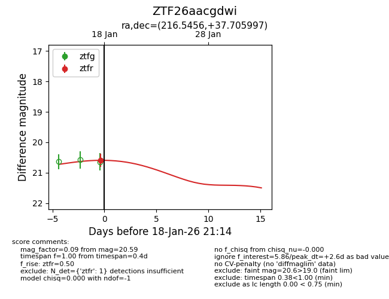
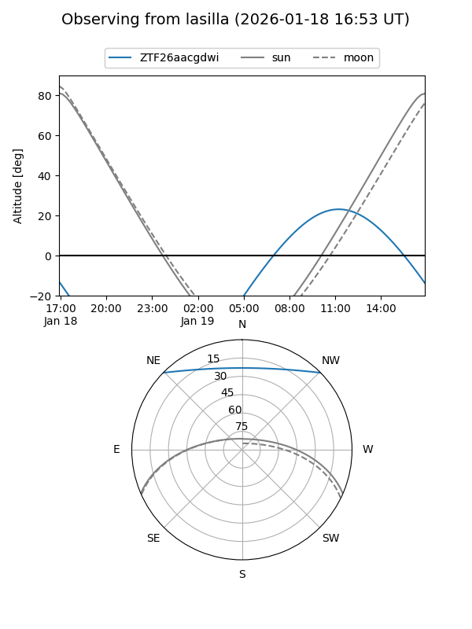
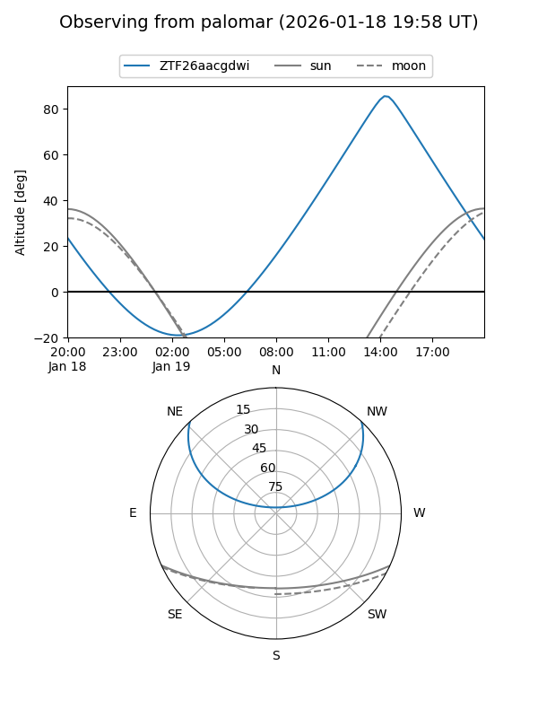
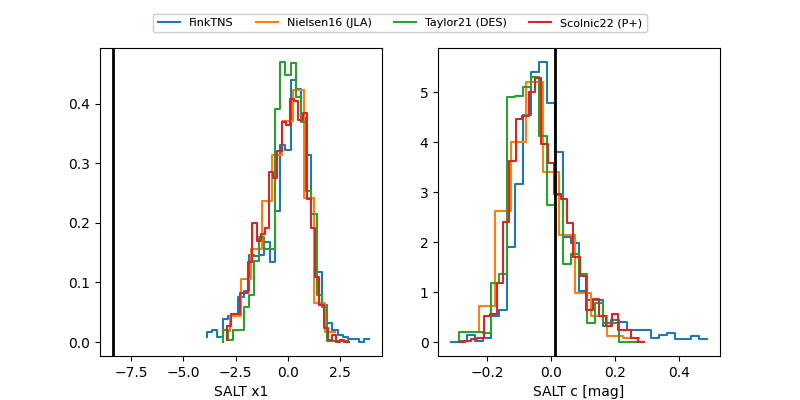

ZTF26aacgdwi
Target ZTF26aacgdwi at 2026-01-18 21:16
Aliases and brokers:
FINK: link
Lasair: link
ALeRCE: link
alt names
ZTF26aacgdwi (ztf,fink_ztf)
Coordinates:
equatorial (ra, dec) = 216.5456,+37.70600
equatorial (HMS+DMS) = 14:26:10.95,+37:42:21.59
galactic (l, b) = (66.8800,+67.47182)
Flags:
Photometry:
last ztfr=20.59
1 ztfr detections
Lightcurve

Visibility


Additional plots
